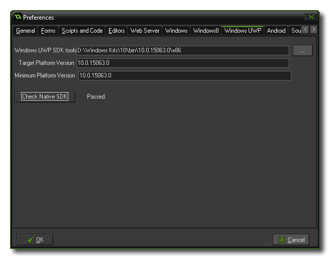

For GameMaker: Studio to work with the UWP (Universal Windows Platform) target, you need to specify the path to Visual Studio. Visual STudio is required to build the games, and once you have supplied the path to your installation, you should click the button labeled "Check Native SDK" to ensure that it has been discovered correctly by GameMaker: Studio. You will also need to supply the Minimum and Target SDK platform version before you are able to compile anything.